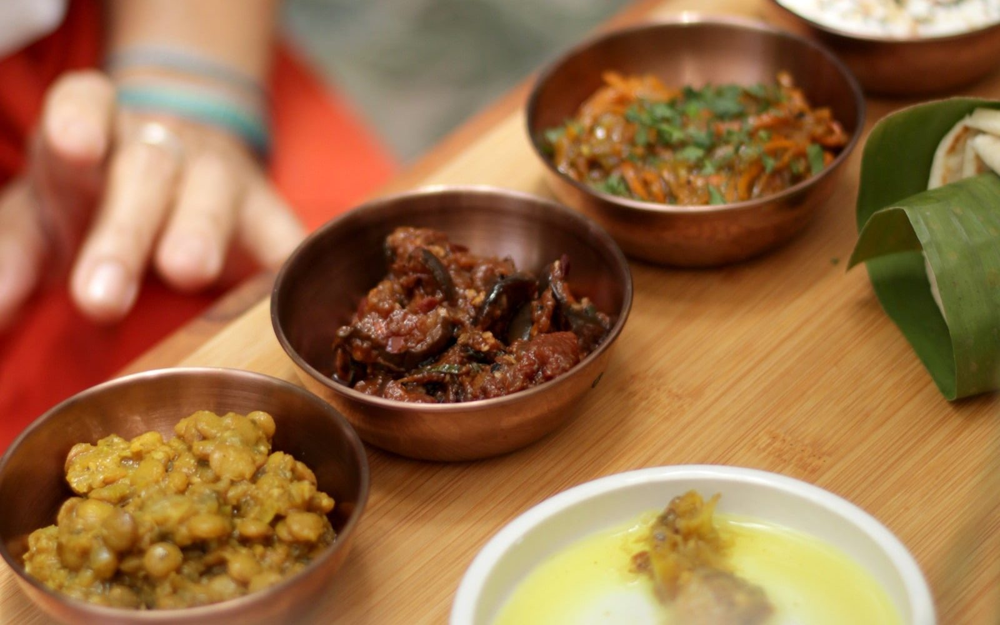
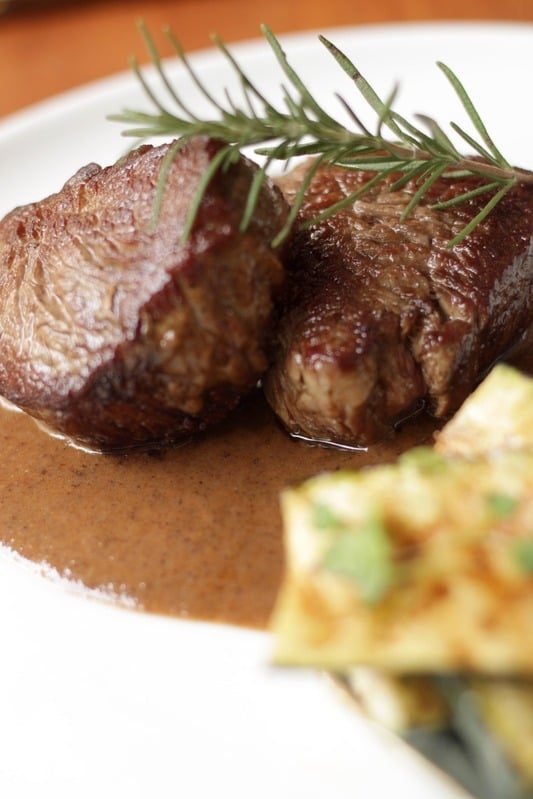
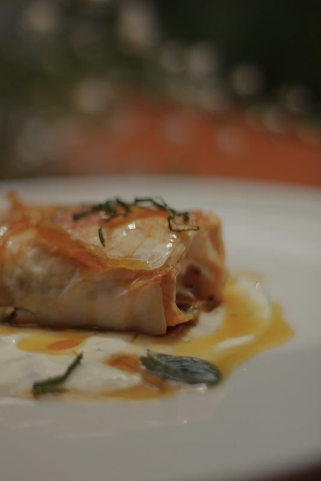
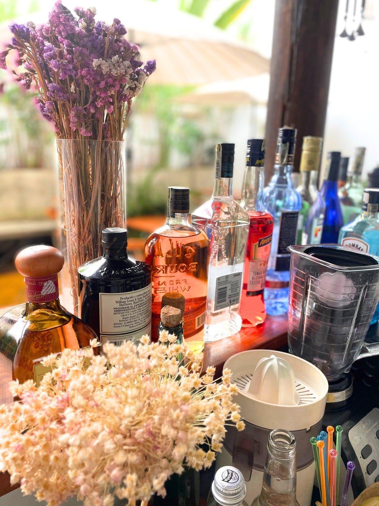
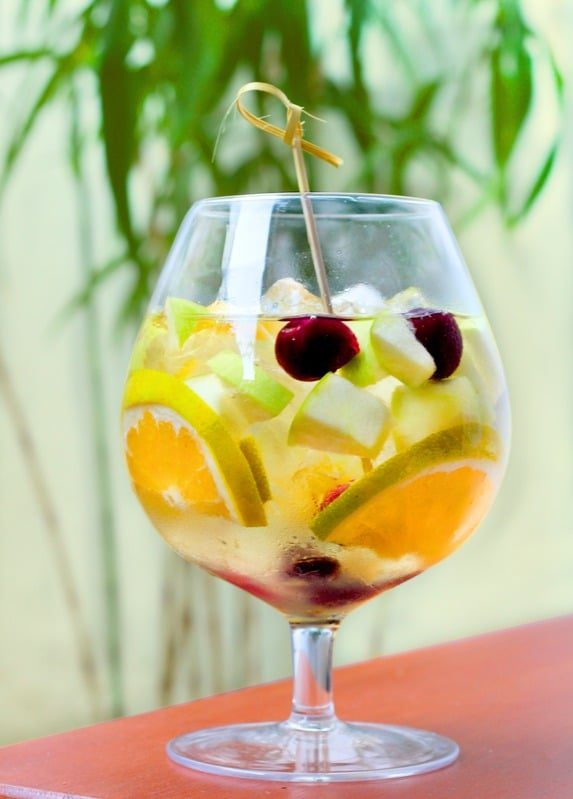

Conoce Azul San Antonio · Cali
Así es Azul
Una casa en San Antonio donde se cruzan el Mediterráneo, la India y el norte de África.

Los aromas
Mediterráneo, India y norte de África
La carta se mueve entre tres cocinas: berenjena ahumada, hummus, aceitunas kalamata y queso feta del Mediterráneo; masala, leche de coco y samosas de la India; cuscús, limones en salmuera y especias de Marruecos del norte de África.
- Entradas para compartir: tabla mediterránea, Azul baba ganoush y plato marroquí
- Cordero en cuscús y musaka, lomo, arroz meloso de conejo y caldoso de mar
- Pescado fresco, envuelto de pescado y camarón, mejillones con aromas del sur

Un plato único
Los clandestinos
Un clandestino es un plato único preparado e inspirado en ti. Si Martha se encuentra, pregunta por los clandestinos.
- Pregunta por ellos al reservar o en la mesa
- Cuéntanos qué te gusta y qué no: el plato se inspira en ti
- Sujeto a que Martha esté en la cocina ese día

La barra
Cócteles, vinos y sangría
Clásicos como el negroni, el dry martini o el old fashioned a mi modo; sangría y vino de verano por copa o jarra, y vinos blancos, tintos, rosados y cava.
- Cócteles desde $42.000 y mojito virgen sin licor
- Sangría de vino tinto o blanco: copa $45.000, jarra $155.000
- Vinos de Argentina, Chile, España, Italia y Francia

Para todos
Vegano, niños y celebraciones
En los platos marcados con la hoja se puede excluir cualquier producto de origen animal, hay pasta napolitana para los niños y, para fechas especiales, preparamos menús de celebración.
- Opción vegana en entradas, ensaladas, sopas y pastas
- Avísanos si eres intolerante o alérgico: las recetas contienen frutos secos, harinas, lácteos, mariscos y picante
- Cuencos de mediodía: la propuesta de almuerzo, publicada en el menú del día